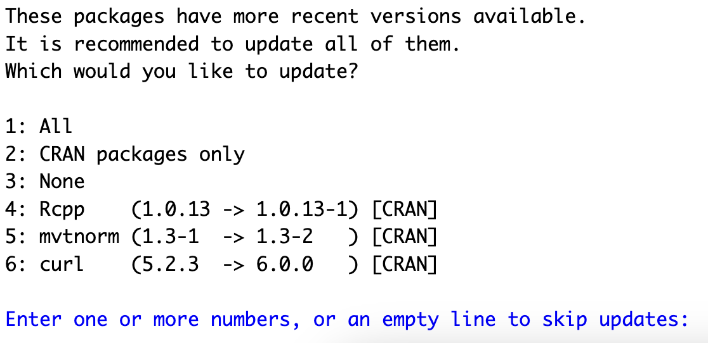

Show code
install.packages("handwriter")
install.packages("handwriterRF")
install.packages("handwriterApp")
Handwriter requires R, RStudio IDE, and JAGS.
Install the handwriterApp R package. Open RStudio and navigate to the console window and type
install.packages("handwriter")
install.packages("handwriterRF")
install.packages("handwriterApp")You might encounter the following message.

Handwriter uses other R packages. This message asks whether to install the newest versions of the Rcpp, mvtnorm, and curl packages. You will likely see different R packages listed. Type “1” without the quotation marks and hit enter to install all updates.
Scan your handwriting samples at 300 DPI and save them as PNG files. If you don’t have your own handwriting samples, you can download samples for free from the CSAFE Handwriting Database.
Open RStudio, navigate to the console window, and type:
library(handwriterApp)
library(handwriterRF)
handwriterApp()In the pop-up window, click Open in Browser. If you use the app in the pop-up window instead of in a browser, some links will not work.
Handwriter addresses two scenarios.
Compare a questioned document to a single handwritten document.
Requirements
Result: A score-based likelihood ratio that expresses the support of the evidence in favor of the samples having been written by the same writer or different writers.
Compare a questioned document to a group of known handwriting samples.
Requirements
Result: The posterior probability that each potential writer wrote the questioned document.
In the app, choose the scenario that fits your handwriting samples by clicking the scenario’s button. Follow the instructions to analyze your handwriting samples.